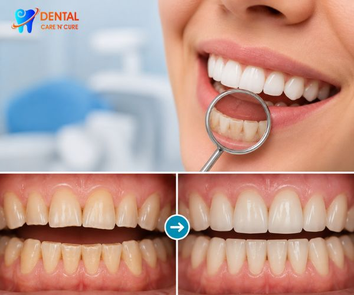
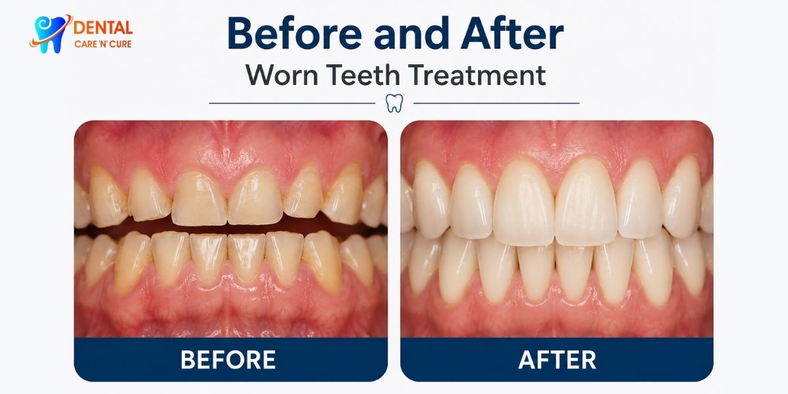

Our Location
Our Location
1st Floor, A3/15, Main Road, Paschim Vihar, New Delhi - 110063
 +91- 9310999214
+91- 9310999214
Call for free consultation
Worn Teeth Treatment in Delhi | Restore Damaged & Worn-Out Teeth

Dental wear can ultimately affect someone's smile, their occlusion, and their overall dental condition. The reasons why people have worn-out teeth can be bruxism, enamel layer erosion, aging, and malocclusion formation. If you identify worn teeth early enough, it will be possible to save the teeth from further damage.
Our experts at Dental Care N Cure offer advanced worn teeth treatment in Delhi at Paschim Vihar, West Delhi. We apply the latest dental techniques to restore worn teeth and improve their strength and functionality. Your oral condition will determine what kind of care will be provided, whether it’s only the need for teeth grinding damage treatment or full mouth rehabilitation for worn teeth.
Our clinic receives patients from Janakpuri, Punjabi Bagh,Rajouri Garden, Meera Bagh, Vikaspuri, Uttam Nagar, Tilak Nagar, and other parts of West Delhi for damaged teeth restoration and other dental services.
What Are Worn Teeth?
Worn teeth are the teeth that have weakened in their structure through the influence of physical pressure, dissolution of chemicals, or abrasion. Teeth wear may be experienced from the outside structure of the teeth (enamel) or deep within the teeth, causing sensitivity or other dental issues.
Causes of Tooth Wear
There are several reasons behind worn teeth, including:
- Grinding of teeth (Bruxism)
- Uneven bite alignment
- Acid erosion from foods and beverages
- Age-related tooth wear
- Aggressive brushing habits
- Chewing hard objects
- Missing teeth causing uneven pressure
Diagnosis at an early stage aids dentists in recommending the most appropriate worn teeth treatment in Delhi to avoid further wear on your teeth.
When Should You See the Dentist?
You should see a dentist when:
- Multiple worn or damaged teeth
- Persistent tooth sensitivity
- Teeth becoming thinner or shorter
- Regular jaw pain or muscle tension
- Bite changes
- Cracked or fractured teeth
- Signs of teeth grinding
At Dental Care N Cure, our specialists evaluate the cause and severity of tooth wear before recommending the most suitable teeth wear treatment plan.
How We Diagnose Worn Teeth
Diagnosis plays an important role in tooth wear repair treatment. At Dental Care N Cure, our dental experts carefully evaluate your tooth condition, bite pattern, and overall oral health.
The evaluation may include:
- Detailed dental examination
- Assessment of tooth wear patterns
- Bite and jaw function analysis
- Review of teeth grinding or clenching habits
- Digital dental imaging, if required
A proper diagnosis helps our team recommend the most suitable worn teeth treatment in Delhi for long-term dental health.
Advanced Worn Teeth Treatment Options in Delhi
Every Worn Teeth Treatment in Delhi plan is customised according to the severity of tooth wear and the patient's oral health condition. This will help to strengthen the tooth, increase functionality, and improve appearance.
- Dental Crowns: Dental Crowns are advised in cases where the individual has very worn-out, fragile, and even damaged teeth and needs extra protection and strength.
- Dental Veneers: Dental veneers are extremely thin layers of material that are bonded to the tooth’s surface to change its look.
- Tooth Bonding: Tooth bonding is advised in cases where the individual has slightly worn-out, chipped, and damaged teeth. This involves the use of tooth-colored material for tooth structure preservation.
- Bite Correction: A bad bite may lead to additional pressure on the teeth and accelerate tooth erosion. Bite correction ensures that teeth can be aligned and that the process of chewing becomes better.
- Treatment for Bruxism: Teeth become worn out because of the problem of teeth grinding (bruxism) and jaw clenching. Use of night guards helps in protecting teeth.
- Full Mouth Rehabilitation: If the wear of the teeth is severe, Full Mouth Rehabilitation in Delhi might be helpful to you. It includes dental treatments that help in the restoration of health and function.
Advantages of Worn Teeth Treatment
Professional worn teeth treatment in Delhi can improve both dental function and smile appearance.
- Restoration of damaged tooth structure
- Improved chewing comfort
- Reduced sensitivity
- Pain relief
- Better bite balance
- Protection against further tooth wear
- Restored smile
- Enhanced confidence
- Improved oral health
The outcome is dependent on the extent of tooth erosion and the customized treatment plan that has been developed by your dentist.
If worn teeth have significantly affected your smile aesthetics, Smile Makeover Treatment in Delhi may help restore a more balanced, attractive, and confident smile.
Why is Dental Care N Cure the Right Choice for Worn Teeth Treatment in Delhi?
Worn teeth treatment in Delhi at Dental Care N Cure, Paschim Vihar, West Delhi, provides an effective, personalized solution.
Why patients choose us:
- Experienced dental specialists
- Personalised treatment planning
- Modern restorative dentistry solutions
- Advanced dental solutions
- Comfortable patient-focused care
- Natural-looking teeth treatment outcomes
We serve patients across West Delhi and nearby areas seeking advanced care for worn-out teeth restoration.
Before and After Worn Teeth Treatment Results
Worn Teeth Treatment in Delhi will help to enhance the appearance, chewing efficiency, and functionality of the teeth. The outcome will vary based on the condition of the teeth and the chosen method of dental restoration for worn teeth.

The outcome shown will help to enhance the appearance and functionality of the teeth after treatment planning.
Real Patient Experiences
"My worn teeth were causing sensitivity and discomfort. The worn tooth repair treatment at Dental Care N Cure helped restore my teeth and improve my smile." – Patient, Paschim Vihar
"I was worried about the appearance of my worn teeth. The dentists explained everything clearly and provided excellent care with great results." – Patient, Janakpuri
"Years of teeth grinding had damaged my teeth. After treatment, chewing feels comfortable again, and my confidence has improved." – Patient, West Delhi
Common Questions About Worn-Out Teeth and Treatment
What causes worn teeth?
Yes. It is possible because TMJ disorders might result in stress on the jaw muscle structure and thereby cause frequent headaches and migraines.
How can I tell if I need TMJ treatment?
Teeth grinding and clenching, along with the wearing down of tooth enamel due to aging, malocclusion, and jaw/oral habits, can cause tooth wear.
Can worn teeth be restored?
A variety of methods are employed to restore teeth with crowns, veneers, bonding, enamel protection, and, in some cases, full-mouth reconstruction.
Is treatment painful?
Most dental procedures are performed with the patient’s comfort in mind. Your dentist will ensure your comfort during treatment.
Can worn teeth grow back naturally?
Unfortunately, no; damaged teeth do not regrow by themselves. There is some hope, as restoration techniques are available to fix such damage.
Schedule An Appointment for Eroded Teeth Treatment Today
Tooth decay can impact your health and appearance. Dental Care N Cure is one of the top dental care clinics that provides worn teeth treatment in Delhi. Contact us now for your appointment to get stronger, functional teeth.